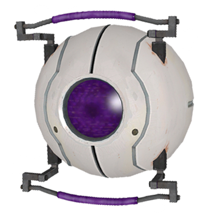

|  | Morality Core
The Morality Core is a personality core that appears in Portal, and Portal 2: Lab Rat. It is one of many cores that was attached to GLaDOS in order to regulate her behavior. It was programmed to prevent her from doing unethical deeds, acting as an artificial conscience. When Doug Rattmann first sees the Morality Core, he doubts its capability to restrain GLaDOS, saying "You can always ignore your conscience". He turns out to be correct, as despite the Morality Core being attached, GLaDOS floods Aperture with neurotoxin anyway.
|